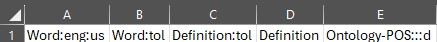
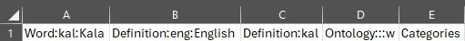
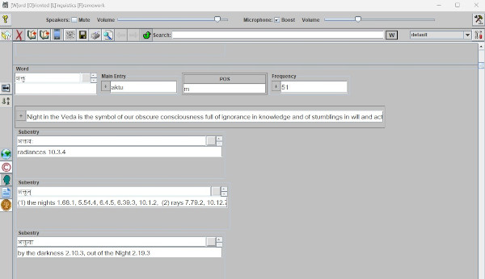

Importing EXCEL Spreadsheet Dictionaries into the Wolf Application
Many linguists create indigenous dictionaries using Microsoft Excel. The purpose of this page is to show how one can easily import these into the WOLF dictionary application. WOLF supports importing multiple worksheets from EXCEL in one shot. It also supports merging multiple Excel spreadsheets into a single dictionary. The steps for doing this follow:
Steps to import an EXCEL dictionary into Wolf
First Step: Add a first row to the Excel dictionary.
Row one of the spreadsheet must map EXCEL columns into WOLF fields. The first step is to add a first row and define these column headings according to the rules listed below (examples are shown at the end of this page).
Column headings need to be in this specific formatFIELD:CODE:DIALECT:LANGUAGE_NAME:APPLY where
FIELD = The specific WOLF field name
CODE = The three digit ISO language code
- Field names that the WOLF application shows vertically are: Word, Definition, Row Subentry, Example, and Row Comment. WOLF displays Row Comments in a single display box. The other of these fields are displayed vertically with one line for each language.
- Field names that the WOLF application shows in columns, but with a vertical line for each language are: Compare, Encyclopedia Info, Gloss, Lexical Function, References, Reversals, Restrictions, Usage, and Variants.
- Field names that the WOLF application shows in columns, but without a vertical line for each language are: Annotations, Antonyms, Categories, Comment, Etymology, Frequency, Language Links, Main Entry, Morphemes, Refer To, Spelling, Subentry, Synonyms, Table, Thesaurus.
- The Ontology field can be customized in the Wolf application display. The simplist is to use Ontology-xxx, where xxx is the type of ontology (e.g., POS). If you are using GOLD ontology specifications, the field names for these are: Ontology, Ontology-C, Ontology-PC, Ontology-P/C, Ontology-C/D, Ontology-PC/D. Refer to Gold Ontology standards for more information. P (for parent), C (for child), and D (for data) would then be in subsequent Worksheet rows separated by commas.
For example, "san" is the standard code for Sanskrit. This field is required in Excel column A (or B if Step 2 below applies). It will be the default language for other columns. Those fields that contain translation rows must specify a language code if they do not want to use the default.DIALECT = A one or two digit abbreviation for the language dialectFor example, "us" might be used to specify American English. This entry is optional.LANGUAGE_NAME = A user readable name for the languageFor eng, the name English might be used for LANGUAGE_NAME. This entry is optional.APPLY = "w" or "d" to indicate if this field applies to a word or the most recently defined definition or subentry. If not specified, "w" is the default.
Second Step: If your worksheet defines words that span multiple rows, you need to add a first column. WOLF looks for first columns that start with a comma. Then enter column descriptions (as defined in Step 1 above) separated by commas. Two commas in a row will skip that column. An example is provided at the end of this page.
Third Step: Save a copy of your EXCEL file specifying the XML Spreadsheet 2003 format.
Fourth Step: Assuming the Wolf application is installed, click on its import option. It is the third icon from the top left. It looks like an open book with an arrow pointing in. Browse to where you stored the dictionary XML file and select it.
Fifth Step: After the import, an icon will appear for each language on the bottom wall of the ACORNS application. Clicking once turns an icon read. Clicking again turns it green. The green icon is the active language. Those that are red are translation languages.
Additional Notes
- Word must be specified in Excel Column A (or in Column B if step 2 above applies). Only one word can apply to a spreadsheets row. Additional Word entries are allowed, but they must contain different language CODE values.
- Wolf has default column widths and fonts that it uses for its display. This being said, it automatically applies the fonts and column widths from the EXCEL worksheets when possible.
Examples of Excel apecifications recognized by WOLF
English word translated into Tolowa with a definition in each language and an part of speech ontology displayed as a column to the right of thge definition
Kala word with definitions in Kala and English. The Ontology data is displayed on a single row. The "Categories" field is used to specify a village location

Sanskrit example of a multi-column word definition in an EXCEL worksheet.

Screenshot of a partial dictionary display in WOLF
The default location that WOLF uses for storing its dictionaries is in the Acorns folder within Documents. A sample snippet of a successfully imported dictionary based on the above Excel layout is shown below.
